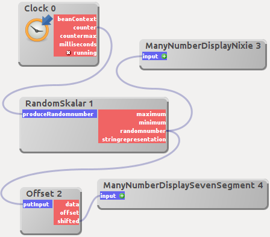
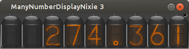
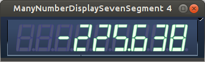

7-Segment- und Nixie-Update
Nachdem ich die Komponenten zur Anzeige numerischer Werte als Nixie-Röhren und 7-Segment-Anzeige implementiert hatte, wollte ich noch einen Schritt weitergehen - es sollte möglich werden, auch Kommazahlen damit anzuzeigen.
Die Implementierung der Fähigkeit zur Darstellung eines Dezimalpunktes gestaltete sich einfacher, was die Visualisierung anging: die 7-Segment-Anzeige bekam einfach ein achtes Segment - den Dezimalpunkt.
Zur Unterstützung der Darstellung von Dezimalpunkt und negativem Vorzeichen wird bei der Nixie-Komponente eine zweite "Röhre" implementiert, die alle Sonderzeichen enthält - diese kommt dann an der Stelle des Dezimalpunktes und an der Stelle des Vorzeichens zum Einsatz.
Damit das Ganze schön ausgetestet werden konnte, habe ich entsprechende Module für dWb+ erstellt und getestet:

Der Workspace in dWb+
Nixie-Komponente zur Darstellung von Gleitkommazahlen
7-Segment-Komponente zur Darstellung von (vorzeichenbehafteten) Gleitkommazahlen Die zusätzlich benötigten Quelltexte findet man zum Download in den Artikeln über die Komponenten zur Modellierung von Nixie-Röhren und 7-Segment-Anzeigen.

Artikel, die hierher verlinken
Nixie-Röhren mit frei wählbarer Farbe
23.07.2017
Ich habe meine alte Komponente zur "retro"-Anzeige von Zahlenwerten überholt und ihr die Möglichkeit gegeben, verschiedene Farben darzustellen - damit könnte man zum Beispiel auf das Überschreiten von Schwellwerten reagieren...
FX-Komponente als Java-Version
02.12.2016
Ich wurde wieder einmal bei einer meiner Inspirationsquellen fündig und versuchte, die dort vorgestellte Komponente mit Java-Mitteln nachzuvollziehen.
Enzo-Komponenten durch JavaScript in dWb+
27.09.2015
Dieser Artikel beschreibt die Integration der Graphikbibliothek Enzo, deren Autor mich schon hin und wieder inspiriert hat.
Tags


Neueste Artikel
-
 Docker und CI/CD
Docker und CI/CD
Nachdem ich mich lange dagegen gewehrt habe, Docker privat einzusetzen, habe ich jetzt doch wieder angefangen, mich damit zu beschäftigen...
Weiterlesen... -
Umzug Netzwerklabor abgeschlossen
In meinem vorhergehenden Artikel zu diesem Thema habe ich beschrieben, wie man mit einem einfachen Bash-Skript sehr schnell einen rudimentären Router als LXC-Container aufbauen kann.
Weiterlesen... -
LXC Netzwerk Router
Mein Netzwerklabor beruht derzeit noch auf virtuellen Maschinen, die auf VirtualBox beruhen. Ich trug mich schon seit längerer Zeit mit dem Gedanken, diesen Zustand zu ändern.
Weiterlesen...
Manche nennen es Blog, manche Web-Seite - ich schreibe hier hin und wieder über meine Erlebnisse, Rückschläge und Erleuchtungen bei meinen Hobbies.
Wer daran teilhaben und eventuell sogar davon profitieren möchte, muß damit leben, daß ich hin und wieder kleine Ausflüge in Bereiche mache, die nichts mit IT, Administration oder Softwareentwicklung zu tun haben.
Ich wünsche allen Lesern viel Spaß und hin und wieder einen kleinen AHA!-Effekt...
PS: Meine öffentlichen GitHub-Repositories findet man hier.